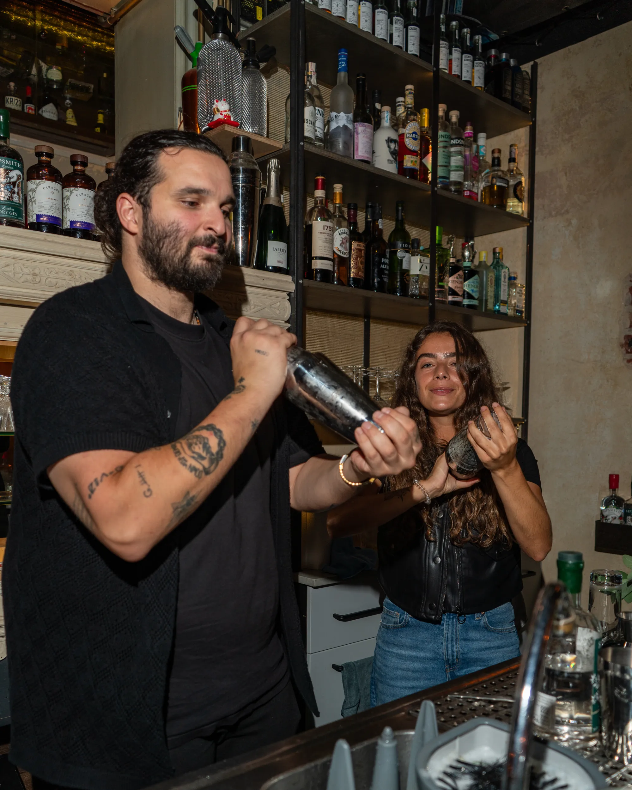
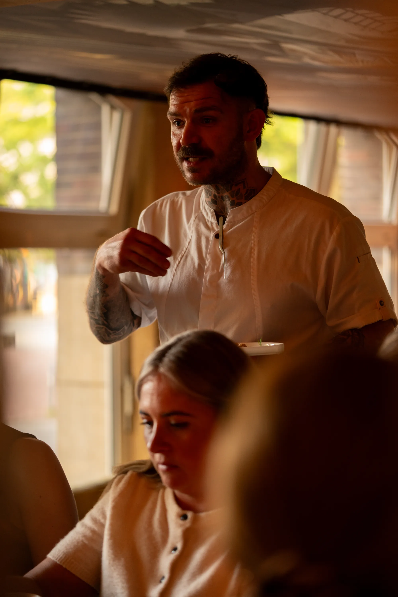

Empfohlen
Ein Abend, Gang für Gang
Die Startseite ist der Abend selbst: ankommen, Aperitif, drei Gänge, die Tafel, der Absacker. Jedes Konzept und jeder Mensch sitzt an der Stelle, an der er an so einem Abend dran ist: Momo beim ersten Glas, Rudi beim Teller, alle zusammen an der Tafel, Dirty Chicken als zweite Küche nach dem Dessert. Wer die Seite einmal herunterscrollt, war einmal da.